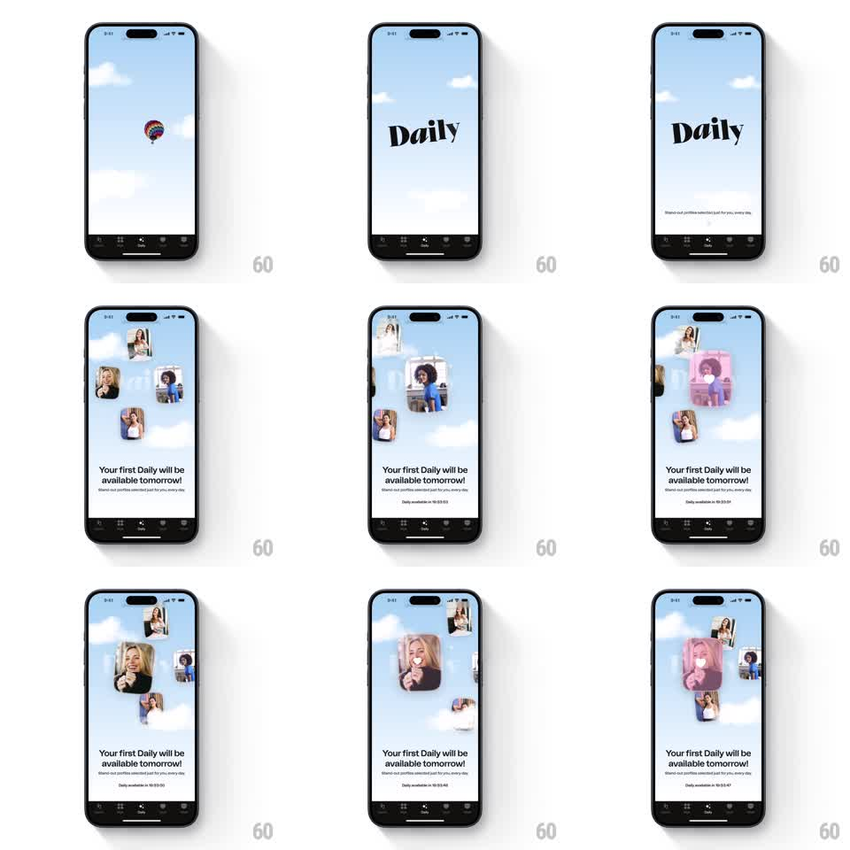

Media
Frame-by-frame

Rebuild this animation 1:1: Happn's Daily feature intro - a "Daily" serif title scales in over a cloudy sky, profile photo cards orbit and drift around the center with heart overlays, and a countdown timer ticks below "Your first Daily will be available tomorrow!".

Rebuild this animation 1:1: Happn's Daily feature intro - a "Daily" serif title scales in over a cloudy sky, profile photo cards orbit and drift around the center with heart overlays, and a countdown timer ticks below "Your first Daily will be available tomorrow!". ## Integration Integration: stack-agnostic spec - springs given as stiffness/damping, timed motions as duration + curve; map every value to your framework and animation library of choice. ## Scene Light sky-blue background with soft drifting clouds (a hot air balloon floats by early). Center stage: the word "Daily" in a large black display serif, subcopy "Stand-out profiles selected just for you, every day". Then 4-6 rounded profile photo cards float and orbit the center; some carry a white heart badge on pink. Bottom block: "Your first Daily will be available tomorrow!" with a live countdown "Daily available in 19:53:47". Standard tab bar at the very bottom. ## Motion spec Pattern: orbiting profile cards with countdown. - Intro: clouds drift in continuously (slow linear pan, 30s per pass, looped); the balloon crosses once (translateX across, 12s). - "Daily" scales from 0.7 with fade (spring ~280/18, 450ms) with a slight rotate (-4deg -> 0); subcopy fades in below (250ms, 100ms later). - Cards enter from screen edges (translate from off-screen + scale 0.6, 400ms, 80ms stagger) and settle onto loose orbital paths around the center: each card drifts on a slow ellipse (6-9s per loop, phase-offset), bobbing rotate +-3deg. - Heart-badge cards pulse the heart gently (scale 1 -> 1.15 -> 1, 1.2s sine). - The bottom block slides up (translateY 20pt, 300ms); the countdown ticks live every second with a subtle digit roll on change (100ms). ## Calibration - Cards overlap the title zone slightly but never fully cover "Daily". - Motion is airy and slow - nothing snappy. ## Reduced motion Cards fade in at fixed scattered positions; only the countdown keeps ticking. ## Don't miss - The countdown is real time (HH:MM:SS) - it must actually tick down. - The tab bar stays put; motion is contained above it.